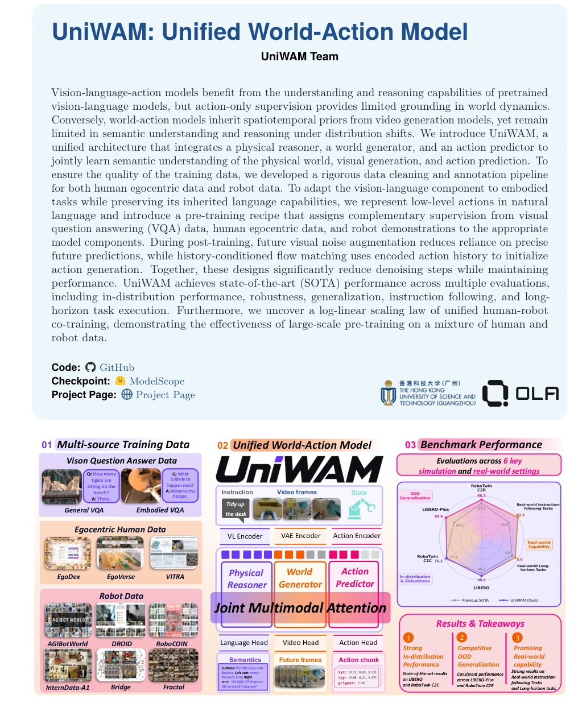
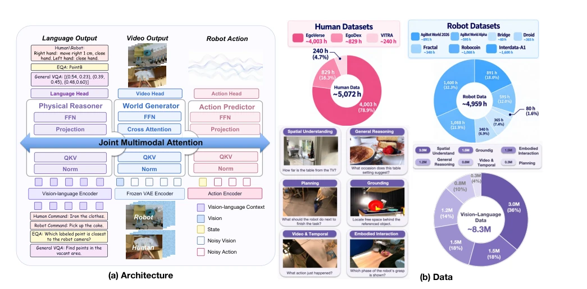
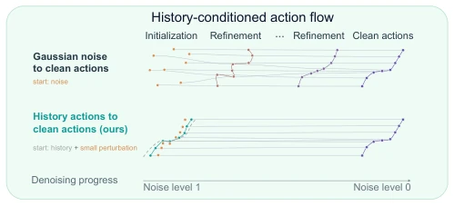
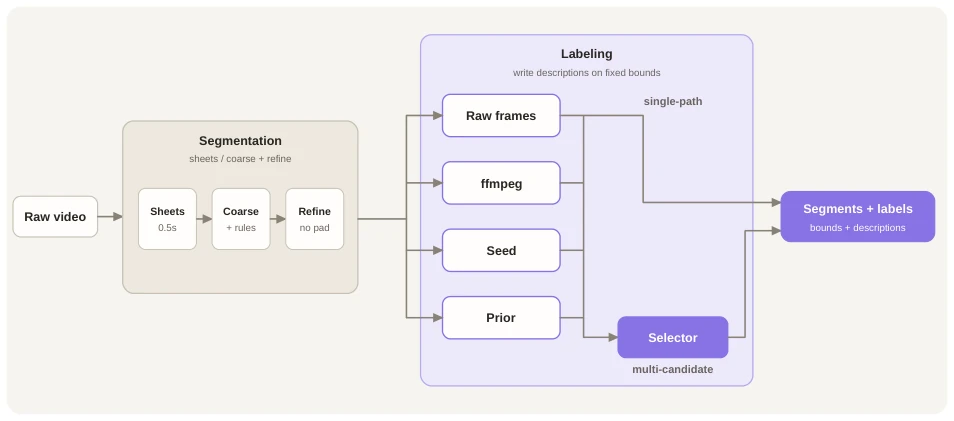
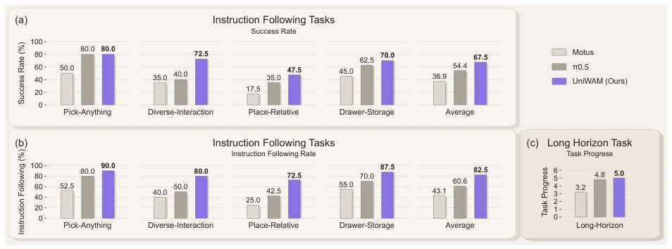
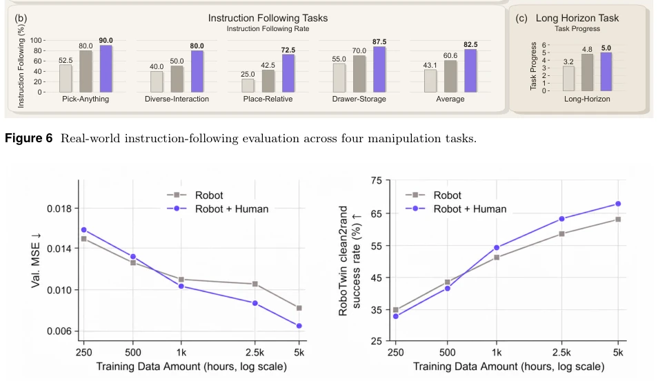
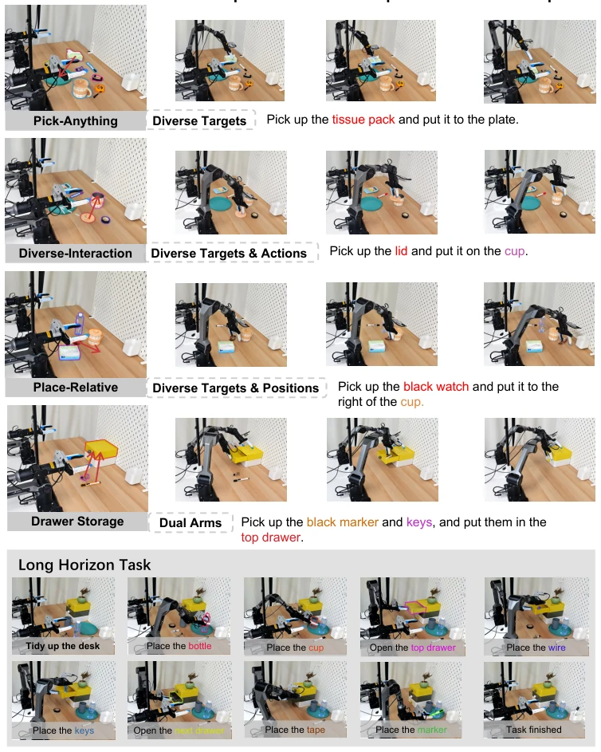
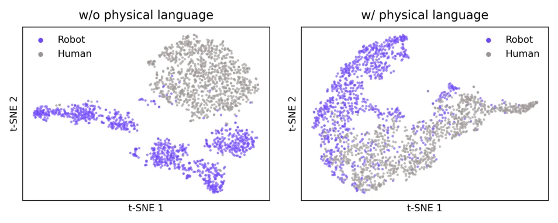
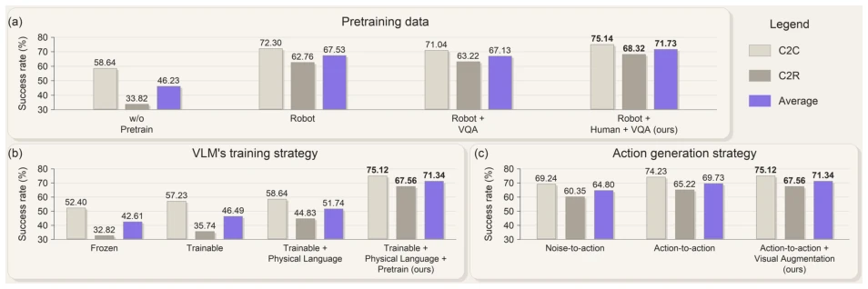
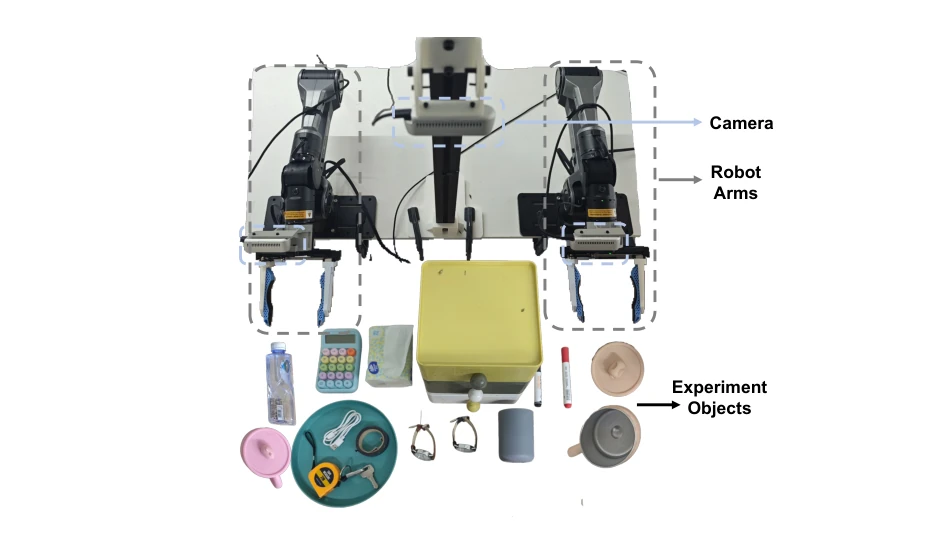

The name UniWAM is quite ambitious, directly aiming to encompass both the semantics of VLA and the dynamics of WAM. Architecturally, it employs a MoT, combining physical reasoning, world generation, and action prediction together, looking quite sophisticated. The biggest highlight is converting low-level actions into natural language (Physical Language), a clever move that preserves VLM semantic capabilities while providing action supervision, essentially an "indirect strategy." However, training this hybrid model is estimated to be a GPU killer; the data cleaning and annotation process (EgoANT) looks complex, and human data quality control is a major pitfall. Although it dominates benchmarks on LIBERO and RoboTwin impressively, how is the long-horizon task reasoning efficiency in the real world? After all, with fewer denoising steps, model complexity has increased, so deployment costs must be calculated clearly. Overall, it is an ambitious attempt, but the cost of "unification" is training and inference complexity; whether it can truly be general depends on subsequent extensions. Especially since it relies on a large amount of high-quality human-robot data, this data dependency may be difficult to replicate in the industry. Furthermore, although claiming to reduce denoising steps, the computational overhead of Flow Matching itself is not completely eliminated, and trade-offs are still needed during actual deployment. Although this unified architecture is theoretically beautiful, VRAM usage and latency issues during engineering deployment cannot be ignored, after all, robots are not cloud servers.
研究动机Motivation
现有 VLA 模型（如 RT-2, OpenVLA）依赖动作监督，对世界动态理解不足（Zitkovich et al., 2023; Kim et al., 2025b）。WAM 模型（如 Motus, DreamZero）虽懂物理动态，但分布外泛化和语义推理弱（Bi et al., 2026a; Ye et al., 2026）。UniWAM 旨在解决这个割裂问题，结合 VLM 的推理和 VGM 的动态先验。具体而言，VLA 缺乏物理 grounding，导致 OOD 泛化差；WAM 缺乏语义理解，难以处理复杂指令。UniWAM 试图通过统一架构，让模型同时具备语义理解和物理预测能力。这解决了具身智能中“懂语言不懂物理”和“懂物理不懂语言”的矛盾。通过引入 VQA 数据和物理语言监督，模型能在保持语言能力的同时学习动作。这种设计旨在打破 VLA 和 WAM 的界限，实现真正的通用机器人策略。
Existing VLA models (e.g., RT-2, OpenVLA) rely on action supervision and lack sufficient understanding of world dynamics (Zitkovich et al., 2023; Kim et al., 2025b). WAM models (e.g., Motus, DreamZero), while understanding physical dynamics, have weak out-of-distribution generalization and semantic reasoning (Bi et al., 2026a; Ye et al., 2026). UniWAM aims to solve this fragmentation problem, combining VLM reasoning and VGM dynamic priors. Specifically, VLA lacks physical grounding, leading to poor OOD generalization; WAM lacks semantic understanding, making it difficult to handle complex instructions. UniWAM attempts to enable the model to possess both semantic understanding and physical prediction capabilities through a unified architecture. This resolves the contradiction in embodied intelligence of "understanding language but not physics" and "understanding physics but not language". By introducing VQA data and physical language supervision, the model can learn actions while maintaining language capabilities. This design aims to break the boundaries between VLA and WAM, achieving truly general-purpose robot policies.

Figure 1 UniWAM unifies physical reasoning, visual generation, and action prediction in a unified architecture and pretrains on robot and human egocentric data as well as VQA data. The resulting model exhibits strong robustness, generalization, instruction-following, and reasoning abilities.
方法Method
整体采用 MoT 架构，包含物理推理器、世界生成器和动作预测器，通过联合注意力交互。数据分三源：机器人、人类第一视角、VQA。预处理包括严格清洗和 EgoANT 自动标注。预训练阶段，动作用自然语言描述（Physical Language Supervision）对齐 VLM 分布，视觉和动作用 Flow Matching 联合训练。后训练引入未来帧噪声增强和基于历史动作的 Flow Matching 初始化，减少去噪步数。具体而言，物理推理器基于 Qwen3-VL，世界生成器基于 Wan2.2，动作预测器预测连续流场。训练目标包括语言损失、视觉流匹配和动作流匹配。后训练中，未来帧噪声增强让动作预测不依赖完美未来视觉，历史动作初始化让生成更连贯。这种设计使得模型在推理时能利用历史动作信息，减少了对纯噪声初始化的依赖，从而加速收敛。同时，物理语言监督确保了 VLM 在动作微调时不遗忘语义知识。
Overall, it adopts a MoT architecture, containing a physical reasoner, world generator, and action predictor, interacting via joint attention. Data is divided into three sources: robot, human first-person perspective, and VQA. Preprocessing includes strict cleaning and EgoANT automatic annotation. In the pretraining phase, actions are described in natural language (Physical Language Supervision) to align with VLM distribution, and vision and actions are jointly trained using Flow Matching. Post-training introduces future frame noise augmentation and Flow Matching initialization based on historical actions to reduce denoising steps. Specifically, the physical reasoner is based on Qwen3-VL, the world generator on Wan2.2, and the action predictor predicts continuous flow fields. Training objectives include language loss, visual flow matching, and action flow matching. In post-training, future frame noise augmentation makes action prediction not dependent on perfect future vision, and historical action initialization makes generation more coherent. This design allows the model to utilize historical action information during inference, reducing dependence on pure noise initialization, thereby accelerating convergence. Meanwhile, physical language supervision ensures that the VLM does not forget semantic knowledge during action fine-tuning.

Figure 3 Overview of our UniWAM. (a) UniWAM comprises a physical reasoner, a world generator, and an action predictor interconnected through joint multimodal attention. Robot data and human egocentric data are jointly used to train all three experts, with supervision for the physical reasoner provided in the form of physical language. General VQA and Embodied Question Answering (EQA) data are additionally used to train the physical reasoner. (b) Overview of the pretraining data: Human and robot data are measured in hours; vision–language data are measured in millions of samples. Percentages are computed within each data category.

Figure 4 History-conditioned action denoising. Action genera- tion starts from perturbed action history rather than Gaussian noise.

Figure 2 EgoANT annotation pipeline. An untrimmed egocentric video is represented as timestamped contact sheets and segmented through a full-episode coarse pass followed by local temporal refinement. With the refined boundaries fixed, the multi-candidate annotation route generates descriptions using raw-frame annotation, an alternative FFmpeg decoding and frame-sampling path, and relabeling conditioned on seed or prior descriptions. A text-only selector chooses the final description without re-examining the video. The output consists of temporal intervals paired with concise subtask descriptions, which we use to annotate EgoDex.
Simulation uses LIBERO and RoboTwin 2.0, real world uses AgileX Piper. Baselines include π0, Motus, etc. UniWAM achieves 99.2% success rate on LIBERO, 71.73% on RoboTwin. Instruction following rate on real tasks is 82.5%. A log-linear scaling law for human-robot hybrid training was discovered. Ablation studies verified the importance of physical language supervision and data sources. Specifically, it performs excellently in OOD tests on LIBERO-Plus, proving strong generalization capabilities. In real tasks, it supports long-horizon tasks and multi-object interaction well. Under RoboTwin C2R settings, the performance drop is far smaller than baselines, indicating better robustness. Additionally, human data processed through EgoANT significantly improved the model's performance on unseen scenarios. These results prove the advantages of the unified architecture in complex tasks, but also expose the dependency on data quality.

Figure 6 Real-world instruction-following evaluation across four manipulation tasks.

Figure 7 Data scaling comparison between Robot and Robot + Human. Left: validation MSE. Right: RoboTwin clean2rand success rate. The x-axis reports the number of robot-data hours on a logarithmic scale. Robot + Human augments the robot data with a fixed proportion of human data. At the final data point, the training set comprises 4958 hours of robot data and 5072 hours of human data. All settings use mixed training with VQA data.

Figure 5 Overview of our real-world evaluation tasks. The top panel shows representative execution sequences for four instruction-following tasks: Pick-Anything, Diverse-Interaction, Place-Relative, and Drawer Storage. The bottom panel presents a long-horizon task, where the robot sequentially completes multiple manipulation stages.
其他图片Other Figures

Figure 8 Human–robot transfer emerges with physical-language pretraining. t-SNE visualization of physical reasoner representations from robot (purple) and human (gray) data without (left) and with (right) physical language supervision. The representations exhibit greater overlap with supervision.

Figure 9 Ablation studies on RoboTwin 2.0.

Figure 10 Real-world experimental setup. Our setup consists of two robot arms, three cameras for observation, and a diverse set of everyday objects used in the manipulation experiments.